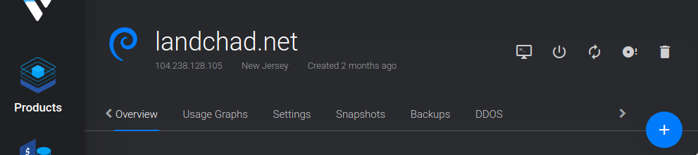

Uncomplicated Firewall (UFW) is a front-facing program for the more involved iptables firewall program installed in most GNU/Linux distributions.
We can use ufw to restrict machines on the internet to only access the services (SSH, websites etc) you want them to, but it can also be used to prevent programs on the computer itself from accesing parts of the internet it shouldn't.
How to Get It
Log into your server by pulling up a terminal and typing:
ssh root@example.orgThis command will attempt to log into your server and run a remote shell. If you leave the settings default, it should prompt you for your password, and you can just copy or type in the password from Vultr's site.
Some VPS providers automatically install ufw, but if you do not have it installed already, install it in the typical way:
apt install ufwFirst-Time Setup
You can check the status of ufw right now by running:
ufw statusWithout any changes, it should report back Status: inactive. Let's set it up so that only connections to SSH (standardized at port 22) are allowed in, and then enable the firewall:
ufw default deny incoming # block all incoming connections by default
ufw allow in ssh # or: ufw allow in 22
ufw enableWith the firewall enabled and allowing only SSH in, all other ports are protected from incoming requests. To view all your rules, run:
ufw status verboseA firewall that allows to connect to SSH and their website may look like:
Status: active
Logging: on (low)
Default: deny (incoming), allow (outgoing), deny (routed)
New profiles: skip
To Action From
-- ------ ----
22 (SSH) ALLOW IN Anywhere
80,443/tcp (WWW Full) ALLOW IN Anywhere
22 (SSH (v6)) ALLOW IN Anywhere (v6)
80,443/tcp (WWW Full (v6)) ALLOW IN Anywhere (v6)If you want to delete e.g. the 'WWW Full' rule, run:
ufw delete allow in 'WWW Full'
ufw reloadEnabling Common Services
You have blocked all incoming ports but SSH, which means no outsiders would be able to access other services, like an email server or your website. You should look at the ports your services are open on and enable them individually. Here is a list of a few common services:
Opening Port Numbers
Suppose you install a Gemini server, which must broadcast on port 1965. By default ufw blocks all incoming connections on all ports, so whenever you install a new service like this you will have to tell ufw to enable the desired port:
ufw allow 1985Websites: HTTP and HTTPS
HTTP uses port 80 and HTTPS uses port 443. We can enable them like this:
ufw allow 80
ufw allow 443But ufw additionally knows the typical ports of common serives, so you can also run this:
ufw allow http
ufw allow httpsAnd that will do the same thing. There are also other abbreviations for common port lists:
ufw allow in 'WWW Full'To see these other "apps" that ufw knows by default, run ufw app list
Email: IMAP, POP3, and SMTP
ufw allow in IMAPS
ufw allow in POP3
ufw allow in SMTP
ufw allow in 'Postfix SMTPS'
ufw allow in 'Mail Submission'Fine-Tuning Rules
Instead of denying all ports by default, you may want to deny (ignores incoming requests) or reject (explicitly tells requests they're not allowed):
ufw default allow in
ufw deny in PORT
ufw reject in PORT
ufw reloadYou can add rules to comments to remember what they are there for:
ufw allow in PORT comment 'Secret SSH'
ufw reload
ufw status verboseOutput:
To Action From
-- ------ ----
PORT ALLOW IN Anywhere # Secret SSH
PORT (v6) ALLOW IN Anywhere (v6) # Secret SSHTo deny outgoing ports:
ufw deny out PORTRatelimiting is useful to protect against brute-force login attacks, like in SSH. Only IPv4 is supported for now. Enable it by running:
ufw limit PORT/tcpTo blocklist IP addresses:
ufw deny from IP_ADDRESSTo read more what you can do with ufw, run:
man ufwRecovering SSH
If you have accidentally firewalled yourself from logging on your computer, you can recover access by using your VPS's virtual console. On Vultr, this is on your VPS's menu. To the right of the server name, It is the leftmost icon that looks like a monitor.
Log in through there, and disable ufw by typing:
ufw disable